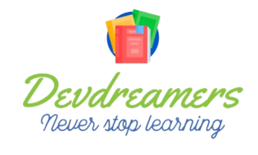
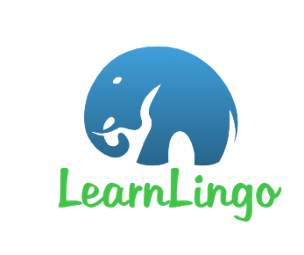

Bienvenidos a DevDreamers!
Devdreamers es un nombre que evoca creatividad, innovación y pasión por
la tecnología. Como equipo encargado de desarrollar una aplicación web,
representamos a un grupo de soñadores y entusiastas de la programación y
el diseño web.
Nuestro objetivo es convertir ideas en realidad, combinando habilidades
técnicas y visión artística para crear una experiencia digital única y
cautivadora. Devdreamers destaca por su dedicación para hacer realidad
los sueños digitales de sus clientes, aportando soluciones tecnológicas
eficientes y de alta calidad.

Integrantes del equipo:
- Luis López – 6880
- Arleth Cáceres – 6861
- Erika Estrada – 7131
- Víctor Macas – 6755
- Sebastián Merino – 6882
LearnLingo
LearnLingo es una aplicación diseñada para aquellos que quieren aprender
idiomas. Con su interfaz amigable y sus divertidos juegos, LearnLingo
hace que el aprendizaje de idiomas sea una experiencia emocionante y
gratificante. Los usuarios pueden elegir entre una amplia gama de
idiomas, incluyendo inglés, español, francés, alemán y muchos más.
Además, la aplicación utiliza tecnología de vanguardia para personalizar
el aprendizaje para cada usuario, lo que significa que se adapta a su
nivel y estilo de aprendizaje para maximizar la efectividad del
aprendizaje.

Definición del Alcance del proyecto
En esta sección, se expondrán los primeros pasos para establecer el proyecto de desarrollo de software, donde se requerirá llevar a cabo el análisis fundamental del negocio y los requisitos del producto a ser creado.
Ir a documentación
Planificación del Proyecto
Esta sección aborda la planificación de los artefactos del proyecto de software y la ubicación de los planes que serán implementados en el proyecto.
Ir a documentación
Ejecución, Monitoreo y Control de Proyecto
Esta etapa consiste en la ejecución de todos los artefactos del proyecto, monitoreando su correcto funcionamiento sin afectar el desarrollo general del proyecto. Por último, se llevan a cabo los controles necesarios para evaluar el desempeño y comportamiento del proyecto.
Ir a documentación
Cierre del Proyecto
En esta sección, se llega al final del proyecto, donde se concluyen todos los artefactos y se realiza la entrega del producto final.
Ir a documentación